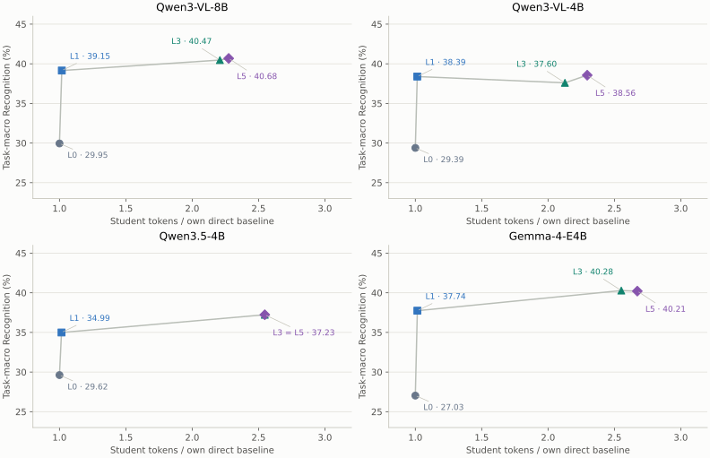
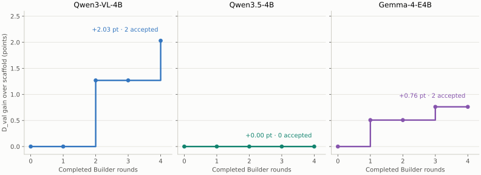

Four student models.
Full evaluation of student-specific harnesses.
Luna optimized a separate harness for Qwen3-VL-4B, Qwen3.5-4B and Gemma E4B. Qwen3-VL-8B reuses its previously frozen bundle. Fixed Whisper transcription and openSMILE features provide audio information; no additional language model analyzes the clip.
16 / 16 evaluations accepted 5,507 examples · 8 tasks Full development evaluationBefore and after
Primary metric: task-macro Recognition across eight tasks. Each row uses the same 5,507 media-isolated examples. Total gain compares the final harness with that student’s own direct baseline; Builder gain compares it with the common scaffold.
| Student | Direct · L0 | + tools · L1 | Scaffold · L3 | Final · L5 | Total gain (pt) | Builder gain (pt) |
|---|---|---|---|---|---|---|
| Qwen3-VL-8B | 29.95 | 39.15 | 40.47 | 40.68 | +10.72 | +0.21 |
| Qwen3-VL-4B | 29.39 | 38.39 | 37.60 | 38.56 | +9.17 | +0.95 |
| Qwen3.5-4B | 29.62 | 34.99 | 37.23 | 37.23 | +7.61 | 0.00 |
| Gemma-4-E4B | 27.03 | 37.74 | 40.28 | 40.21 | +13.18 | −0.07 |
Gains come from paired estimates before rounding. L5 for the 8B model reuses its prior construction; the other three L5 bundles come from this batch. These are percentages and percentage-point differences, not relative percentage gains.
What was optimized, and what was evaluated?
One harness per student, then a separate full evaluation. Luna changes prompts, code and configuration; it does not train the student’s weights or optimize an answer for each evaluation video.
| Student | Luna construction | Final bundle used for evaluation |
|---|---|---|
| Qwen3-VL-8B | Previously optimized specifically for 8B | Reuse its frozen prior bundle; no new build |
| Qwen3-VL-4B | New student-specific run · 4 rounds | Own final bundle · 2 accepted changes |
| Qwen3.5-4B | New student-specific run · 4 rounds | No accepted changes; scaffold-equivalent labels |
| Gemma-4-E4B | New student-specific run · 4 rounds | Own final bundle · 2 accepted changes |
Construction uses 399 D_build and 394 D_val items, with a 200-item cheap gate. Those items are not the 5,507 evaluation items. Luna also reviews proposed changes through a same-model verifier. The evaluation itself uses the frozen student harness, without Luna optimizing the test answers.
Seen task categories
2,963ER_Lab · ER_Wild · SA
These task kinds appear in construction. The evaluation videos themselves are separate from construction and validation media.
Evaluated in every armHeld-out task categories
2,544Noise_ER · FG_ER · ML_ER · FG_SA · IR
These task kinds are excluded from construction. They test transfer to other kinds of tasks. They are part of the 5,507 evaluated items.
Evaluated in every armReserved external test
129D_ext-test · a separate protected set
Not used in this evaluation or its example gallery. Reserved for a later, frozen-method test.
Not evaluated“Full” = all 5,507 eligible examples across all eight tasks. The source manifest has 5,577 items; 70 were excluded because their videos overlap construction, validation or the reserved external test. Every student runs L0, L1, L3 and L5 on exactly these same 5,507 items: 16 arms, 88,112 prediction records. This is not a 1,000-item limit.
“Held-out task” does not mean a never-inspected test set. The benchmark has been used during development. The full evaluation contains 986 eligible items from the old subset and 4,521 additional items. Report task transfer separately from claims about a fresh untouched test.
Where the improvement comes from
Official question and visual/video input. One student call, no added audio text.
Add Whisper transcription and openSMILE acoustic cues. One student call.
Visual evidence, hypotheses, verification and synthesis. Code validates evidence and selects labels.
Use that student’s frozen final bundle. No Builder calls during evaluation.
Most of the gain over the bare model comes before Builder optimization. Tool information helps all four students. The scaffold adds a model-dependent effect; the final Builder increment ranges from a small decrease to about one point. No Builder increment is significant after Holm correction across the 16 full-set comparisons. Qwen3.5 accepted no changes and its L3/L5 predicted labels are identical across all 5,507 examples.
How the harness works
The same student handles the reasoning calls. Deterministic tools supply observations and code controls the final labels. Luna builds and reviews edits offline, before evaluation.
On small screens, scroll horizontally. Download the flow diagram · SVG

Explore one student
Scores and paired gains for each task group and data stratum.
Bar scale: 0–100% task-macro Recognition. Scores average tasks equally within the selected view.
Paired differences
| Comparison | Gain (pt) | 95% interval (pt) | Raw p | Holm p¹ |
|---|
¹ Holm correction covers the 16 full-set primary comparisons (four models × four differences). Other views are exploratory, unadjusted. The 10,000-resample intervals are not multiplicity-adjusted. “Below resolution” means zero opposite-sign draws in 10,000 bootstrap resamples, not an exact zero probability.
Media-cluster sensitivity intervals
| Comparison | Clustered 95% interval (pt) |
|---|
Resamples whole media clusters rather than individual items. This sensitivity check accounts for shared clips; it does not measure variability across independent Builder runs.
Scores by view
| Row | Task-macro (%) | Sample-weighted (%) | Examples |
|---|
Per-task Recognition · full set (%)
| Task | Group | n | Direct · L0 | Fixed tools · L1 | Scaffold · L3 | Final harness · L5 |
|---|
Multi-label precision, recall and F1 · full set
| Task | Row | Precision (%) | Recall (%) | F1 (%) |
|---|
FG_ER and ML_ER Recognition is recall-style partial credit. Precision and F1 help expose excessive label prediction.
Calls, parsing and measured runtime · full set
| Row | Logical calls | Fresh calls | Tokens / item | Parse events | Elapsed |
|---|
Calls and tokens include cached logical work; fresh calls come from the inference ledger. Runtime mixes cache hits and serving configurations and is not a cold-run speed comparison. Parse events include retries. Qwen3.5 L5 used no new target calls.
Watch the examples
Six real clips with this batch’s recorded answers for all four students. Play with sound to inspect the source; L0 used visual input, while L1/L3/L5 also received fixed audio-derived text. L0 = direct · L1 = fixed tools · L3 = scaffold · L5 = each student’s final harness.
Selected to illustrate successes and failures, not sampled at random. All six are single-label tasks: ✓ means exact first-label agreement with the benchmark; × means disagreement. No responses were regenerated for this page. Expand a card to compare the actual recorded answers.
Added tools change the answer
Reference label: negative
| Student | L0 | L1 | L3 | L5 |
|---|---|---|---|---|
| Qwen3-VL-8B | neutral × | negative ✓ | negative ✓ | negative ✓ |
| Qwen3-VL-4B | neutral × | negative ✓ | negative ✓ | negative ✓ |
| Qwen3.5-4B | neutral × | negative ✓ | negative ✓ | negative ✓ |
| Gemma-4-E4B | neutral × | negative ✓ | negative ✓ | negative ✓ |
All four students go from neutral at L0 to the reference negative at L1, and keep it through L5. This clip illustrates added information; it is not a Builder-only win.
Official question and recorded answers
As an emotion recognition expert, identify the most prominent sentiment displayed in the video. Candidate labels: positive, negative, neutral. Please think step by step. Enclose your final answer within <answer></answer> tags.
Step 1: Setting and context: The scene is an indoor setting with a photo collage on the wall and a ship model on the desk, suggesting a personal or casual environment [v6, v7], but these visual elements do not convey sentiment. Step 2: Facial and bodily cues: The man has a beard and his mouth moves as he speaks [v2, v3], but his facial expression is not visible to assess emotional tone, and his posture is neutral with shoulders visible while seated [v4, v5]. Step 3: Vocal and verbal cues: The audio clearly conveys a negative sentiment with the speaker saying, 'don't even waste your time renting this one it's just not' [a1], which is a direct expression of disapproval. Step 4: Cross-modal synthesis and strongest alternative: The strongest alternative is neutral, but it is contradicted by the explicit negative verbal cue [a1], which dominates all other cues and leaves no room for ambiguity. The negative sentiment is supported solely by the speaker's dismissive verbal statement [a1], which directly contradicts any neutral or positive interpretation. Step 5: Based on the analysis, the predicted sentiment is negative. <answer>negative</answer>
Verbatim model output; the explanation may contain errors. Cue IDs refer to recorded evidence. Agreement is scored against the benchmark reference, not a human re-annotation.
mme_sa_267466_45 · Video
A held-out task, with mixed transfer
Reference label: neutral
| Student | L0 | L1 | L3 | L5 |
|---|---|---|---|---|
| Qwen3-VL-8B | worried × | worried × | neutral ✓ | neutral ✓ |
| Qwen3-VL-4B | angry × | sad × | worried × | worried × |
| Qwen3.5-4B | sad × | worried × | worried × | worried × |
| Gemma-4-E4B | worried × | worried × | worried × | worried × |
Only Qwen3-VL-8B reaches the reference neutral, at L3. The other three finish with worried. This task category was held out of construction, but this clip was already shown in the previous development evaluation.
Official question and recorded answers
As an emotion recognition expert, identify the most prominent emotion displayed in the video. Candidate labels: happy, neutral, angry, surprise, sad, worried. Please think step by step. Enclose your final answer within <answer></answer> tags.
Step 1: Setting and context: The scene takes place in a dimly lit room with a wooden structure behind the man and another person wearing a white headband to his left [v6, v7, v8]. The man has dark hair tied back and wears dark clothing, sitting facing the other person [v2, v4, v5]. Step 2: Facial and bodily cues: The man has visible blood on his cheek, which suggests physical injury [v1]. His facial expression and body posture do not show overt distress or agitation, and his dark clothing and tied-back hair suggest composure [v4, v3]. Step 3: Vocal and verbal cues: The man speaks in fast, variable-pitch speech, saying '是我自己碰到了伤虫' [a1, a2, a3]. Step 4: Cross-modal synthesis and strongest alternative: The strongest alternative is 'sad', supported by the blood on his cheek [v1], but the vocal cues suggest neutrality [a1, a2, a3], and no visual cues indicate sadness or worry. The top-ranked reading 'neutral' is supported by the man’s calm vocal delivery and self-explanatory speech [a1, a2, a3], which contradicts the emotional implication of 'sad' despite the visible injury [v1]. Step 5: Based on the analysis, the predicted emotion is neutral. <answer>neutral</answer>
Verbatim model output; the explanation may contain errors. Cue IDs refer to recorded evidence. Agreement is scored against the benchmark reference, not a human re-annotation.
mme_noise_er_samplenew3_00009341 · Video
An individual Qwen3-VL-4B Builder win
Reference label: negative
| Student | L0 | L1 | L3 | L5 |
|---|---|---|---|---|
| Qwen3-VL-8B | very strong positive × | very strong negative × | negative ✓ | neutral × |
| Qwen3-VL-4B | strong positive × | weak negative × | very strong negative × | negative ✓ |
| Qwen3.5-4B | weak positive × | weak positive × | weak negative × | weak negative × |
| Gemma-4-E4B | positive × | negative ✓ | negative ✓ | negative ✓ |
For Qwen3-VL-4B, the scaffold predicts very strong negative; its own final bundle predicts the reference negative. This is one successful item, not evidence that every item or the overall benchmark improves.
Official question and recorded answers
As an emotion recognition expert, identify the most prominent fine-grained sentiment displayed in the video. Candidate labels: very strong negative, strong negative, negative, weak negative, neutral, weak positive, positive, strong positive, very strong positive. Please think step by step. Enclose your final answer within <answer></answer> tags.
Step 1: Setting and context: The scene is set in a room with white walls and bookshelves, suggesting a calm or intellectual environment, as indicated by [v4] and [v5], though no emotional tone is conveyed by the setting alone. Step 2: Facial and bodily cues: The woman’s broad smile [v2] and direct eye contact [v3] suggest positive or neutral affect, contradicting the negative verbal cue, which creates a potential ironic or nuanced emotional contrast. Step 3: Vocal and verbal cues: The spoken phrase 'And I hate to say that.' [a1] clearly conveys a negative sentiment, yet its delivery is not marked by distress, making it ambiguous whether the negativity is sincere or ironic. Step 4: Cross-modal synthesis and strongest alternative: The strongest alternative is 'negative', supported by [a1], but contradicted by [v2], which suggests a more complex or ironic tone rather than pure negativity. The top-ranked reading is 'negative' because [a1] strongly supports it, while [v2] contradicts it, making the negative label the most supported despite the visual contradiction. Step 5: Based on the analysis, the predicted fine-grained sentiment is negative. <answer>negative</answer>
Verbatim model output; the explanation may contain errors. Cue IDs refer to recorded evidence. Agreement is scored against the benchmark reference, not a human re-annotation.
mme_fg_sa_nzpVDcQ0ywM_7 · Video
An individual Gemma Builder win
Reference label: negative
| Student | L0 | L1 | L3 | L5 |
|---|---|---|---|---|
| Qwen3-VL-8B | strong positive × | weak negative × | negative ✓ | negative ✓ |
| Qwen3-VL-4B | neutral × | weak negative × | negative ✓ | negative ✓ |
| Qwen3.5-4B | neutral × | neutral × | neutral × | neutral × |
| Gemma-4-E4B | neutral × | weak negative × | strong negative × | negative ✓ |
Gemma moves from strong negative at L3 to the reference negative at L5. Its aggregate Builder increment is slightly negative, so this selected success must be read alongside the full-set results.
Official question and recorded answers
As an emotion recognition expert, identify the most prominent fine-grained sentiment displayed in the video. Candidate labels: very strong negative, strong negative, negative, weak negative, neutral, weak positive, positive, strong positive, very strong positive. Please think step by step. Enclose your final answer within <answer></answer> tags.
Step 1: Setting and context: The scene depicts a man seated indoors in a chair [v4], with bookshelves visible in the background [v5]. The man is positioned in a setting that suggests an indoor, perhaps academic, environment [v4]. Step 2: Facial and bodily cues: Visually, the man with a beard is looking forward [v1], and he is sitting upright with his hands clasped in front [v2, v3]. These physical postures are relatively neutral in their presentation [v1, v2, v3]. Step 3: Vocal and verbal cues: The audio contains speech where the man says, "It's not my form so" [a1]. This verbal utterance provides the primary input for sentiment analysis [a1]. Step 4: Cross-modal synthesis and strongest alternative: The strongest alternative reading is 'neutral' [hypotheses], which is supported by the visual cues of the man's posture and setting [v1, v2, v3, v4, v5]. However, the speech content [a1] supports a negative sentiment, outweighing the neutral visual presentation. The speech content [a1] provides stronger support for a negative sentiment than the neutral visual cues [v1, v2, v3, v4, v5]. Step 5: Based on the analysis, the predicted fine-grained sentiment is negative. <answer>negative</answer>
Verbatim model output; the explanation may contain errors. Cue IDs refer to recorded evidence. Agreement is scored against the benchmark reference, not a human re-annotation.
mme_fg_sa_yDtzw_Y-7RU_8 · Video
The reused 8B harness still matters
Reference label: Excited
| Student | L0 | L1 | L3 | L5 |
|---|---|---|---|---|
| Qwen3-VL-8B | Happiness × | Happiness × | Happiness × | Excited ✓ |
| Qwen3-VL-4B | Happiness × | Happiness × | Happiness × | Neutral × |
| Qwen3.5-4B | Happiness × | Happiness × | Neutral × | Neutral × |
| Gemma-4-E4B | Happiness × | Frustration × | Frustration × | Neutral × |
Qwen3-VL-8B changes from Happiness at L3 to the reference Excited at L5. This bundle was built for 8B previously; no new 8B construction was run in this batch.
Official question and recorded answers
As an emotion recognition expert, identify the most prominent emotion displayed in the video. Candidate labels: Anger, Sadness, Surprise, Happiness, Excited, Fear, Frustration, Neutral, Other. Please think step by step. Enclose your final answer within <answer></answer> tags.
Step 1: Setting and context: The scene is a split-screen setup with two people in separate rooms, one equipped with a microphone and tripod, suggesting a recording or interview context [v7, v8]. The person on the right is actively engaged with papers and gestures while looking down and then up, indicating focus and responsiveness [v5, v6, v10]. Step 2: Facial and bodily cues: The person on the right displays a smile while looking down [v2] and later turns their head and looks up and to the side [v3, v10], suggesting positive or curious engagement. The person on the left, wearing a sensor headband, remains still with hands on knees, offering no emotional cues [v1, v4]. Step 3: Vocal and verbal cues: The spoken phrase 'what will we do?' [a1] implies forward-looking curiosity or enthusiasm, aligning with an engaged or excited state. There is no vocal cue indicating anger, sadness, fear, or frustration, and no evidence of surprise or neutral tone [a1]. Step 4: Cross-modal synthesis and strongest alternative: The strongest alternative is 'Excited', supported by the upward head turn and question [v10, a1], though 'Happiness' is slightly more confident due to the smile [v2, v10]. 'Neutral' and 'Surprise' are contradicted by the smile and question, and 'Excited' is not contradicted by any cue [v2, v10, a1]. The top-ranked reading 'Happiness' is supported by the smile [v2] and head movement [v10], and the vocal cue 'what will we do?' [a1] aligns with positive curiosity, while 'Excited' is also supported by the same cues [v10, a1] but lacks the smile's direct emotional marker. Step 5: Based on the analysis, the predicted emotion is Excited. <answer>Excited</answer>
Verbatim model output; the explanation may contain errors. Cue IDs refer to recorded evidence. Agreement is scored against the benchmark reference, not a human re-annotation.
mme_er_lab_Ses05F_script03_1_F002 · Video
A shared regression to keep visible
Reference label: Neutral
| Student | L0 | L1 | L3 | L5 |
|---|---|---|---|---|
| Qwen3-VL-8B | Neutral ✓ | Frustration × | Frustration × | Frustration × |
| Qwen3-VL-4B | Neutral ✓ | Frustration × | Frustration × | Frustration × |
| Qwen3.5-4B | Other × | Frustration × | Frustration × | Frustration × |
| Gemma-4-E4B | Neutral ✓ | Frustration × | Frustration × | Frustration × |
Three students match the reference Neutral at L0; all four finish with Frustration. Qwen3.5 is wrong at both endpoints. Added tools already produce Frustration at L1, so this is not a Builder-induced regression.
Official question and recorded answers
As an emotion recognition expert, identify the most prominent emotion displayed in the video. Candidate labels: Anger, Sadness, Surprise, Happiness, Excited, Fear, Frustration, Neutral, Other. Please think step by step. Enclose your final answer within <answer></answer> tags.
Step 1: Setting and context: The scene shows two people in separate rooms with white walls and ceiling tiles [v5, v6], suggesting a formal or clinical setting where communication is mediated, possibly for data collection or remote interaction. Step 2: Facial and bodily cues: The person is seated with arms resting and looking forward [v3, v2], wearing a dark jacket and headgear with sensors [v4, v1], indicating a passive or monitored posture without overt emotional display. Step 3: Vocal and verbal cues: The spoken content includes a complaint about a billing error and a late fee [a1, a2], which directly conveys dissatisfaction and implies frustration as the dominant emotional state. Step 4: Cross-modal synthesis and strongest alternative: The top-ranked reading 'Frustration' is supported by the audio transcript [a1, a2] and has no contradicting evidence, while 'Other' has no support from any modality. Step 5: Based on the analysis, the predicted emotion is Frustration. <answer>Frustration</answer>
Verbatim model output; the explanation may contain errors. Cue IDs refer to recorded evidence. Agreement is scored against the benchmark reference, not a human re-annotation.
mme_er_lab_Ses05F_impro08_F008 · Video
Put the selected clips in context · all 5,507 examples
| Student | L0→L5 better | Same | Worse | L3→L5 better | Same | Worse |
|---|---|---|---|---|---|---|
| Qwen3-VL-8B | 1,355 | 3,341 | 811 | 62 | 5,389 | 56 |
| Qwen3-VL-4B | 1,286 | 3,489 | 732 | 281 | 4,993 | 233 |
| Qwen3.5-4B | 1,275 | 3,355 | 877 | 0 | 5,507 | 0 |
| Gemma-4-E4B | 1,530 | 3,171 | 806 | 46 | 5,416 | 45 |
Counts compare per-item Recognition, including fractional multi-label credit on the full set. They are not task-macro percentage-point gains. Qwen3.5’s zero Builder change remains visible. Download case answers and full-set transition counts · JSON
Student-specific Builder outcomes
Three new construction runs, each capped at four rounds with GPT-5.6 Luna and a same-model proposal verifier. All begin from the same v3 scaffold. Qwen3-VL-8B reuses its frozen prior run.
| Student | Construction | D_val (%) | D_val gain (pt) | This batch API |
|---|---|---|---|---|
| Qwen3-VL-8B | Reused prior full / rep 0 | — | — | $0.0000* |
| Qwen3-VL-4B | 2 accepted / 4 rounds | 45.94 → 47.97 | +2.03 | $0.4878 |
| Qwen3.5-4B | 0 accepted / 4 rounds | 41.12 → 41.12 | 0.00 | $0.2251 |
| Gemma-4-E4B | 2 accepted / 4 rounds | 42.89 → 43.65 | +0.76 | $0.4011 |
D_val has 394 items and is used to select candidates; these gains are search outcomes, not evaluation results. *8B’s historical construction cost is excluded. The zero-accept Qwen3.5 run remains in the comparison; it is not an independent replication of the scaffold.
Quality and budget
Inference tokens and one-time construction API spend answer different questions. The figures below separate them.
01 · Inference token efficiency

02 · Builder loop progression

Recorded construction API spend
| Role | Paid calls | USD |
|---|---|---|
| Luna Builder | 12 | $0.386597 |
| Same-model proposal verifier | 12 | $0.055057 |
| Proxy judge | 1600 | $0.672365 |
Total: $1.1140. Includes Builder, proposal verifier and proxy-judge ledger charges from all three constructions. The local students record $0 API charges. GPU time, preprocessing, coordination sessions and the prior 8B construction are excluded. Cache reuse makes this a batch ledger total, not the cost of an uncached reproduction. Gemma’s historical proxy-admission accounting issue is reconciled using the complete ledger.
How to read these results
Full means 5,507 eligible items, not additional datasets. The canonical 5,577 examples lose 70 because their media overlap construction, validation or the reserved external test. The clean set contains 986 examples from the old 1,000-item subset and 4,521 additional examples. All 16 arms use precisely the same clean IDs.
Task-held-out is different from a fresh untouched test. Seen tasks are ER_Lab, ER_Wild and SA; the five other task kinds were excluded from construction. This benchmark has been inspected during development, including the old subset. The reserved 129-item D_ext-test remains unevaluated. No clean evaluation media overlap was found with D_build, D_val or D_ext-test.
| Task | Construction group | Eligible examples |
|---|---|---|
| ER_Lab | Seen task | 177 |
| ER_Wild | Seen task | 1491 |
| SA | Seen task | 1295 |
| Noise_ER | Held-out task | 500 |
| FG_ER | Held-out task | 500 |
| ML_ER | Held-out task | 590 |
| FG_SA | Held-out task | 461 |
| IR | Held-out task | 493 |
ER_Lab: lab emotion · ER_Wild: in-the-wild emotion · SA: sentiment · Noise_ER: noisy emotion · FG_ER: fine-grained emotion · ML_ER: multi-label emotion · FG_SA: fine-grained sentiment · IR: intent.
Scoring: local Recognition, not an official judge evaluation of explanation quality. Single-label tasks use the first predicted label; multi-label tasks use recall-style partial credit. Task-macro is primary; sample-weighted scores are secondary.
Uncertainty: paired, task-stratified bootstrap with 10,000 resamples; full-set primary p-values use Holm correction over 16 comparisons. Media-cluster intervals are a sensitivity check. Neither captures all inference, search or adaptive evaluation variability. Three new students have one construction run each.
Input and model scope: ffmpeg, Whisper large-v3 and openSMILE; no Omni analyzer. Gemma’s native audio input is unused. Thinking is disabled for Gemma and Qwen3.5. E4B denotes effective parameters, not equal total parameters. L1 versus L3 also changes call budget and organization; it is not an equal-compute architecture ablation.
Quality control: every arm has 5,507 unique expected IDs and one completed evaluation attempt. Frozen inputs, output hashes, bundle provenance and limits passed final acceptance. Errors and zero-gain outcomes are retained. No reserved-test-driven selection or failed-build resampling was added for this page.
Chart data · JSON · Full comparison · Markdown · Acceptance checks · JSON · Previous 1,000-item transfer results · Archived v1 with Omni